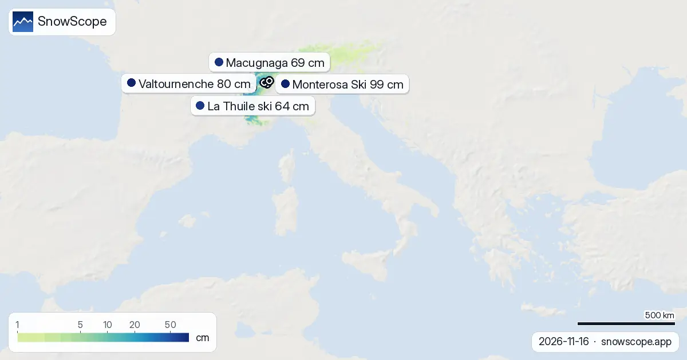

Situazione neve in Italia, 16 novembre 2026: località, neve fresca e prossimi giorni
Lunedì 16 novembre: la neve copre circa 21.210 km² delle montagne in Italia. La superficie è quasi la stessa di ieri.
Le previsioni neve in tempo reale per Monterosa Ski nell'app SnowScopeAltezza neve, allerte powder e mappa 3D, gratis.
Il manto nevoso oggi
Il terreno è per lo più bianco da circa 1.700 m in su. Una settimana fa erano 22.490 km²: da allora si sono sciolti 1.280 km².
| Località | Altezza neve | Neve fresca, 72 h | In arrivo, prossimi giorni | Quota max |
|---|---|---|---|---|
| Monterosa Ski | 99 cm | 8 cm | 31 cm | 3.030 m |
| Valtournenche | 80 cm | 10 cm | 39 cm | 3.091 m |
| Macugnaga | 69 cm | 7 cm | 29 cm | 2.877 m |
| La Thuile ski | 64 cm | 26 cm | 87 cm | 2.608 m |
| Schöneben | 58 cm | 1 cm | 9 cm | 2.381 m |

Dove è caduta la neve fresca
I cumulati di tre giorni arrivano a 16 cm. Di più: Valle d'Aosta, Alpi piemontesi e Appennino centrale.
Solo nelle ultime 24 ore sono caduti fino a 9 cm.

Cosa significa sulle piste
La neve fresca sul fondo regala curve morbide in quota; più in basso resta a chiazze.
Altezza della neve per quota
Altezza media del manto nevoso per fascia di quota: 1.000–1.500 m: in media meno di 1 cm (11 % innevato); 1.500–2.000 m: in media 1 cm (56 % innevato); 2.000–2.500 m: in media 5 cm (89 % innevato); sopra i 2.500 m: in media 17 cm (99 % innevato).
I prossimi giorni
La settimana può portare fino a 75 cm, di cui fino a 50 cm nei prossimi tre giorni.
Il giorno più nevoso: martedì, 17 novembre, fino a 25 cm.
Più avanti, nei giorni 8–14, sui pendii più innevati possono aggiungersi fino a 32 cm.
Le migliori località ora
Più neve sulle piste in quota: Monterosa Ski, 99 cm.
Seguono: Valtournenche (80 cm), Macugnaga (69 cm), La Thuile ski (64 cm) e Schöneben (58 cm).
Monterosa Ski: 8 cm di neve fresca in tre giorni e fino a 31 cm in più entro giovedì, 19 novembre.
Consigli per sciatori
- Prima del fuoripista leggete il bollettino valanghe locale.
Su questi numeri
Le altezze neve delle località sono la neve più alta sui pendii superiori secondo il modello neve di SnowScope (circa 1 km, calcolo del 16 novembre); sono stime per un'area, non una misura in un punto. I valori delle stazioni sono misure alla data indicata. Le previsioni possono cambiare. Leggi sempre il bollettino valanghe ufficiale prima del fuoripista.
Cita questo articolo
Per ricerca, didattica o stampa: numeri e grafici sono liberamente riutilizzabili con licenza CC BY 4.0 citando così.
SnowScope (2026), Situazione neve in Italia, 16 novembre 2026: località, neve fresca e prossimi giorni, https://snowscope.app/blog/it/2026/11/italy-snow-report-16-november-2026.html, consultato il 2026-11-16
SnowScope (Atlas Labs). (2026, November 16). Situazione neve in Italia, 16 novembre 2026: località, neve fresca e prossimi giorni. SnowScope snow reports. https://snowscope.app/blog/it/2026/11/italy-snow-report-16-november-2026.html
BibTeX
@misc{snowscope2026italysnowreport16novembe,
author = {{SnowScope (Atlas Labs)}},
title = {Situazione neve in Italia, 16 novembre 2026: località, neve fresca e prossimi giorni},
year = {2026},
month = nov,
howpublished = {\url{https://snowscope.app/blog/it/2026/11/italy-snow-report-16-november-2026.html}},
note = {Published 2026-11-16 20:42 UTC; accessed 2026-11-16}
}· CC BY 4.0 · Metodi, dati e strumenti →
Monterosa Ski: neve e temperatura per quota, quest'inverno vs lo scorso (strumenti) →
Segui Monterosa Ski
Gratis: un messaggio quando arriva la neve e il meteo ogni mattina.